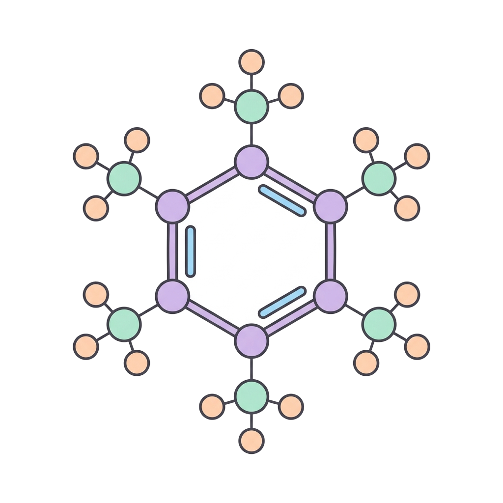

3 · Nomenclatura
Nomenclatura dei medicinali

Nome chimicoDescrive la struttura molecolare esatta della sostanza, seguendo le norme internazionali IUPAC. Di solito è complesso, lungo e poco pratico per l'uso di tutti i giorni.
Esempio: N-(4-idrossifenil)acetammide
Nome generico (DCI)
È il nome ufficiale del principio attivo, cioè della sostanza isolata. È universale — riconosciuto in tutto il mondo — e non appartiene a nessun produttore specifico: è il nome usato in scienza e medicina.
Esempio: paracetamolo
Nome commerciale
È il nome registrato — il marchio di fantasia — scelto dal laboratorio produttore per scopi di marketing e vendita esclusiva.
Esempio: Tylenol®
Lo stesso farmaco, tre nomi
Paracetamolo (generico) e Tylenol® (commerciale) contengono la stessa molecola: cambia solo il nome con cui la chiami.
11